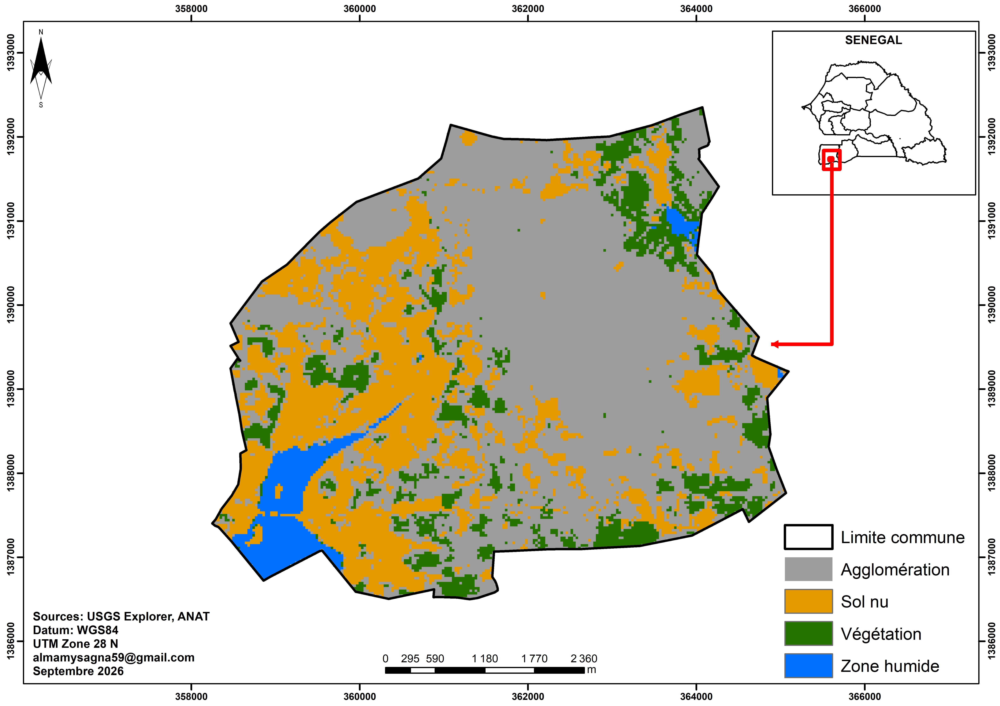
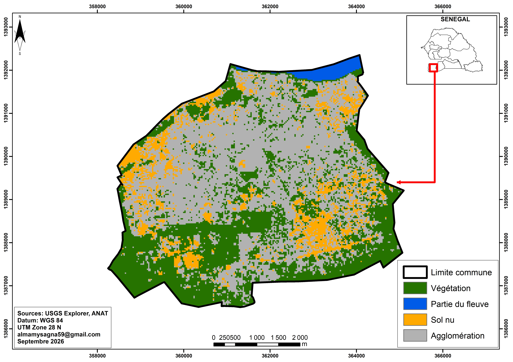
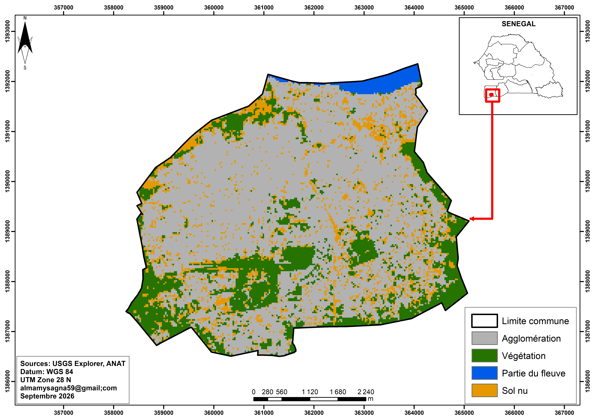
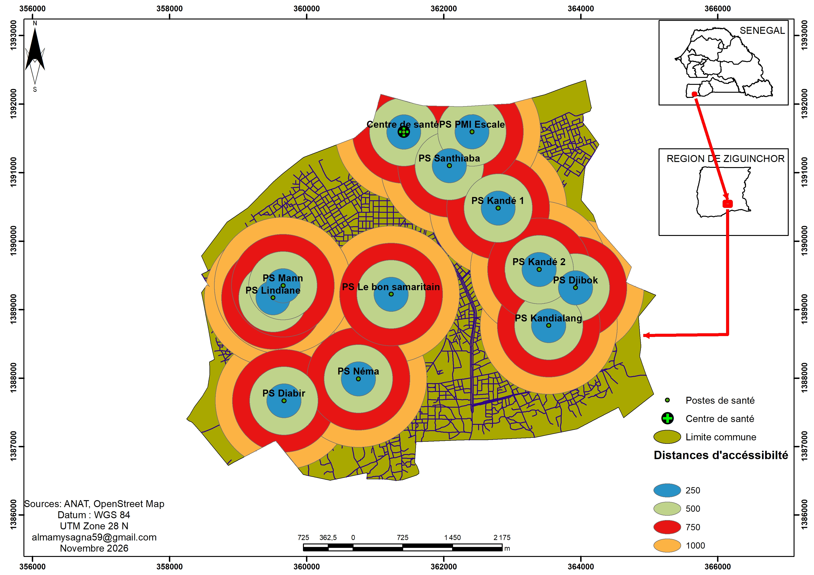

Vulnérabilité au changement climatique et résilience du système de santé
Mémoire de Master en Géographie, UCAD. Analyse spatiale et cartographie.
Le mémoire
Ce travail étudie la vulnérabilité au changement climatique et la résilience du système de santé à Ziguinchor, dans le cadre du Master en Géographie (spécialité Environnement, Territoire, Population et Santé).
Il comprend une analyse spatiale de l'évolution de l'occupation du sol en 2005, 2015 et 2025, d'une carte d'accéssibilité et d'une carte des ilots de chaleur réalisées à partir d'images Landsat et de classifications supervisées.
Cartes
Cliquez sur une carte pour l'ouvrir en grand dans un nouvel onglet.

Occupation du sol en 2005
Classification supervisée d'images Landsat 8/9.

Occupation du sol en 2015
Classification supervisée d'images Landsat 8/9.

Occupation du sol en 2025
Classification supervisée d'images Landsat 8/9.

Carte des îlots de chaleur de la commune en 2026
Carte réalisée avec les données satellitaires des températures de surface de Copernicus.

Mesures d'accessibilité aux postes de santé de la commune
Méthode utilisée : Ndonky.A (2015), E2SFCA.